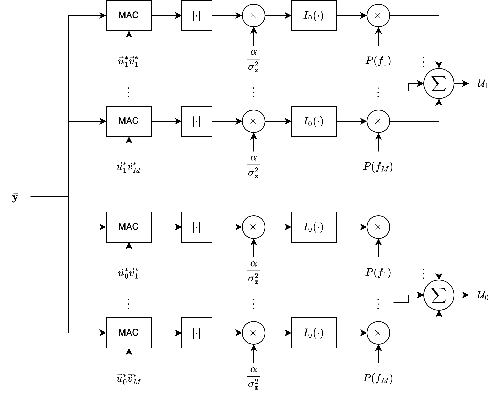
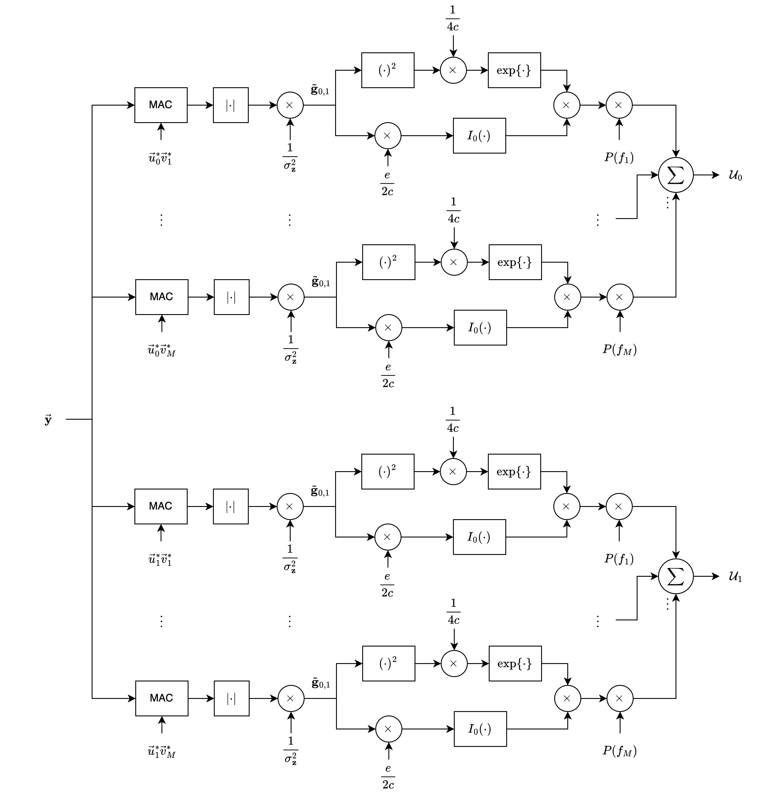

Unknown Frequency#
In this section, we address the scenario where the frequency is unknown.
Typically, this implies that the phase is also unknown.
For simplicity, we make the following assumptions about the random variable representing the unknown frequency, \( f_d \):
\( f_d \) is present under both hypotheses.
This implies that a single transmitter emits a signal corresponding to one of the two hypotheses.
Here, \( f_d \) represents a Doppler shift or a frequency offset between the transmitter and receiver.
\( f_d \) is present under one hypothesis, while the other hypothesis corresponds to noise only.
\( f_d \) remains constant throughout the entire measurement interval \( T \).
While these assumptions simplify the analysis, relaxing them would result in significantly increased complexity.
Signal Modelling#
Using these assumptions, if we have \( k \) samples over the duration \( T \), the \( j \)-th sample under hypothesis \( H_i \) is
where
\( \alpha \) is the attenuation,
\( f_i \) is the known frequency of transmission under hypothesis \( H_i \),
\( f_d \) is the unknown frequency shift,
\( \beta_i \) is the unknown received phase.
Note that \( \alpha \) is possibly unknown.
Using vector notation for the \( k \) samples, we can write
where
represents the components corresponding to the known frequency \( f_i \) and
corresponds to the unknown frequency random variable \( f_d \).
Both \( \vec{u}_i \) and \( \vec{v} \) are column vectors.
Conditional Probabilites#
If the noise is zero mean and white with a correlation matrix of \( \sigma_z^2 I \), the conditional density functions are
which can be expanded to
Consider the last term in this equation. Since
and
Note that \(v_j^* = e^{-j 2\pi f_d t_j}\).
It follows that the last term is
Just as in previous sections, if the phase \( \beta_i \) is assumed uniform in the interval \( (0, 2\pi) \).
We can average over the phase to produce the conditional density function
Likelihood Ratio#
The first two terms have no effect on the decision.
Thus, the conditional likelihood ratio is
In order to proceed, we consider separately the cases where \( \alpha \) is a constant or random.
Unknown Frequency, Known Amplitude#
In this section, we assume that \( \alpha \) is a known constant.
The receiver structures derived in this section are similar to those found in low-probability-of-intercept (LPI) communications.
In this case, the likelihood ratio above is not conditional on \( \alpha \).
Furthermore, the last terms in the numerator and denominator are constants and can be incorporated into the threshold.
Thus, the conditional likelihood ratio is now
where
In order to specify the optimum receiver, we would like to derive the unconditional likelihood ratio.
To do this calculation, we must have knowledge of the density function of the frequency unknown, \( p(f_d) \), and we must be able to calculate expressions such as
Approximated Likelihood Ratio#
In general, we cannot solve this integral analytically; nevertheless, we can proceed using some approximation technique.
Assume that \( f_d \) is known to be in the interval \( f_l \leq f_d \leq f_u \); that is, usually the physics of the problem allows us to estimate the maximum and minimum Doppler and frequency offsets.
If the received frequency shift \( f_m \) occurs with probability \( P(f_m) \), then the integral above can be approximated by a sum
where
and
Optimal Receiver#
This allows us to depict an approximately optimal receiver structure as shown in Figure 6.13.

As seen in the figure, the receiver first correlates the received vector \( \vec{y} \) with the \( i \)-th baseband signal shifted in frequency by \( f_m \).
The magnitude is determined, scaled by \( \alpha / \sigma_z^2 \), and passed through a nonlinearity represented by \( I_0( ) \).
The output is then weighted by the term \( P(f_m) \), and all \( M \) terms are summed, producing the decision variable \( U_i \).
Unknown Frequency, Unknown Amplitude#
If the amplitude is variable and unknown, techniques similar to those developed in the previous section (of unknown amplitude) can be used.
Specifically, we will assume that the transmitted signal energies \( \mathcal{E}_1 \) and \( \mathcal{E}_0 \) are identical and that the amplitude density function is Rician with pdf
Then we can average \(p_i(\vec{y}|\alpha, f_d)\) using the density function \(p(\alpha)\) and using the relationship (as we did previously)
we obtain the density function
where
the random variable \( \tilde{g}_i \) is
and
This allows the unconditional likelihood function to be written as
Using a similar approximation method, i.e.:
If the received frequency shift \( f_m \) occurs with probability \( P(f_m) \), then the integral above can be approximated by a sum
where
and
we obtain an approximate optimal receiver structure, as shown in Figure 6.15, where
